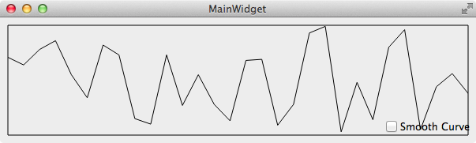

在群里经常有朋友问：不停的从下位机，传感器接收到数据，怎么实时的把这些数据的曲线画出来？就像 Windows 的任务管理器 CPU 监控的动态曲线那样，曲线从左向右移动。
先分析一下这个问题：
- 接收数据：与设备有关，不同的设备接收数据的方式不一样，有的用串口，有的用 TCP，UPD 等，不过这不是本章的重点，我们会用生成随机数模拟从设备接收到数据。
- 随着程序运行的时间越来越长，接收到的数据从开始的几个到几百个，几千个，几万甚至几十上百万个，难道要把所有的数据都要显示出来？不需要，只要把最后接收到的例如 100 个数据显示出来就可以了。
- 曲线怎么才能动起来？以只显示 100 个最新数据为例，存放在链表里，假设链表已经存满 100 个数据，当接收到一个新的数据时，把它放到链表尾部并删除链表的第一个数据，这样就保证了链表存储的都是最新的 100 个数据，前一次的 100 个数据里下标为 1 到 99 的数据和后一次数据里下标为 0 到 98 的数据是一样的，用他们绘制出来的 2 个曲线，后一次数据的曲线就像前一次数据的曲线向左移动了一点一样，这个过程不停的发生，曲线看上去就动起来了。
了解了实时动态曲线的原理，用代码就好实现了，先在 MainWidget.ui 上如图放一个 QCheckBox 并命名为 showSmoothCurveCheckBox：
1
2
3
4
5
6
7
8
9
10
11
12
13
14
15
16
17
18
19
20
21
22
23
24
25
26
27
28
29
30
31
32
33
34
35
36
37
38
39
40
41
42
43
44
45
46
47
48
49
50
51
52
53
| #ifndef REALTIMEWIDGET_H
#define REALTIMEWIDGET_H
#include <QWidget>
#include <QList>
#include <QPainterPath>
namespace Ui {
class RealTimeCurveWidget;
}
class RealTimeWidget : public QWidget {
Q_OBJECT
public:
explicit RealTimeWidget(QWidget *parent = 0);
~RealTimeWidget();
protected:
void timerEvent(QTimerEvent *event) Q_DECL_OVERRIDE;
void paintEvent(QPaintEvent *e) Q_DECL_OVERRIDE;
private:
void dataReceived(int value);
void createCurve();
QList<QPointF> createCurveKnots() const;
Ui::RealTimeCurveWidget *ui;
int timerId;
int maxSize;
int maxValue;
QList<double> data;
int w;
int h;
QPainterPath curve;
};
#endif
|
1
2
3
4
5
6
7
8
9
10
11
12
13
14
15
16
17
18
19
20
21
22
23
24
25
26
27
28
29
30
31
32
33
34
35
36
37
38
39
40
41
42
43
44
45
46
47
48
49
50
51
52
53
54
55
56
57
58
59
60
61
62
63
64
65
66
67
68
69
70
71
72
73
74
75
76
77
78
79
80
81
82
83
84
85
86
87
88
89
90
91
92
93
94
95
| #include "RealTimeCurveWidget.h"
#include "ui_RealTimeCurveWidget.h"
#include "SmoothCurveGenerator2.h"
#include <QTimerEvent>
#include <QtGlobal>
#include <QDateTime>
#include <QPainter>
#include <QPainterPath>
RealTimeWidget::RealTimeWidget(QWidget *parent) :
QWidget(parent), ui(new Ui::RealTimeCurveWidget) {
ui->setupUi(this);
w = 0;
h = 0;
maxSize = 30;
maxValue = 100;
timerId = startTimer(200);
qsrand(QDateTime::currentDateTime().toTime_t());
connect(ui->showSmoothCurveCheckBox, SIGNAL(clicked(bool)), this, SLOT(update()));
}
RealTimeWidget::~RealTimeWidget() {
delete ui;
}
void RealTimeWidget::timerEvent(QTimerEvent *event) {
if (event->timerId() == timerId) {
int newData = qrand() % (maxValue + 1);
dataReceived(newData);
}
}
void RealTimeWidget::paintEvent(QPaintEvent *) {
QPainter painter(this);
painter.setRenderHint(QPainter::Antialiasing);
w = width() - 20;
h = height() - 20;
painter.translate(10, h + 10);
painter.scale(1, -1);
painter.drawRect(0, 0, w, h);
painter.setClipRect(0, 0, w, h);
painter.drawPath(curve);
}
void RealTimeWidget::dataReceived(int value) {
data << value;
while (data.size() > maxSize) {
data.removeFirst();
}
if (isVisible()) {
createCurve();
update();
}
}
void RealTimeWidget::createCurve() {
QList<QPointF> knots = createCurveKnots();
if (ui->showSmoothCurveCheckBox->isChecked()) {
curve = SmoothCurveGenerator2::generateSmoothCurve(knots);
} else {
curve = QPainterPath(knots[0]);
for (int i = 1; i < knots.size(); ++i) {
curve.lineTo(knots[i]);
}
}
}
QList<QPointF> RealTimeWidget::createCurveKnots() const {
int length = data.size();
double stepX = w / (maxSize - 1.0);
double stepY = h / (double) maxValue;
double x = w - stepX * (length - 1);
QList<QPointF> knots;
for (int i = 0; i < length; ++i, x += stepX) {
knots << QPointF(x, data[i] * stepY);
}
return knots;
}
|
在 timerEvnet() 里调用 dataReceived() 模拟不停的接收到新数据并保存到 data 里，然后刷新界面生成最新的曲线图，接收到一个数据就生成一个新的曲线图，由于前后两次有 maxSize - 1 个连续的数据是相同的，所以新的曲线图看上去是上一次曲线图左移了一点点，这样曲线就动起来了。
函数 createCurveKnots() 根据数据和显示曲线的矩形范围来生成曲线上点的坐标。一般情况下数据的大小和它的坐标值不一样，例如数据大小为 50，那么还可以用其表示坐标，但是如果是 13930 呢？这么大的坐标一般屏幕都显示不出来吧，所以通过按比例缩放，把数据映射到曲线所在的矩形中的坐标，这样不管数据有多大都能显示出来了，使用按比例缩放的思想，有需要的时候缩放整个曲线也是很容易的事。
1
2
3
4
5
6
7
8
9
10
11
| #include "RealTimeCurveWidget.h"
#include <QApplication>
int main(int argc, char *argv[]) {
QApplication a(argc, argv);
RealTimeWidget w;
w.show();
return a.exec();
}
|
运行程序，结果如下：

选中 “Smooth Curve” 调用 SmoothCurveCreator::createSmoothCurve(knots) 创建平滑曲线显示数据的曲线，其实现请参考 绘制平滑曲线
思考
- 卡顿：由于不同的平台的性能不一样，例如 Arm 的性能就比较差，如果 createCurve() 消耗时间过多可能造成界面的卡顿，为了解决这个问题，可以另起一个线程来执行 createCurve() 生成曲线。
- 如果生成的效果过于复杂，直接在 QWidget 上绘制效率也是不高的，也有可能造成卡顿，这时可以使用双缓冲技术，先绘制到 QPixmap，然后再把 QPixmap 绘制到 QWidget 上。
- 如果接收数据的速度过快超过了生成曲线的速度，还可以考虑使用任务队列，丢弃队列里比较旧的数据等方式来防止队列过大。